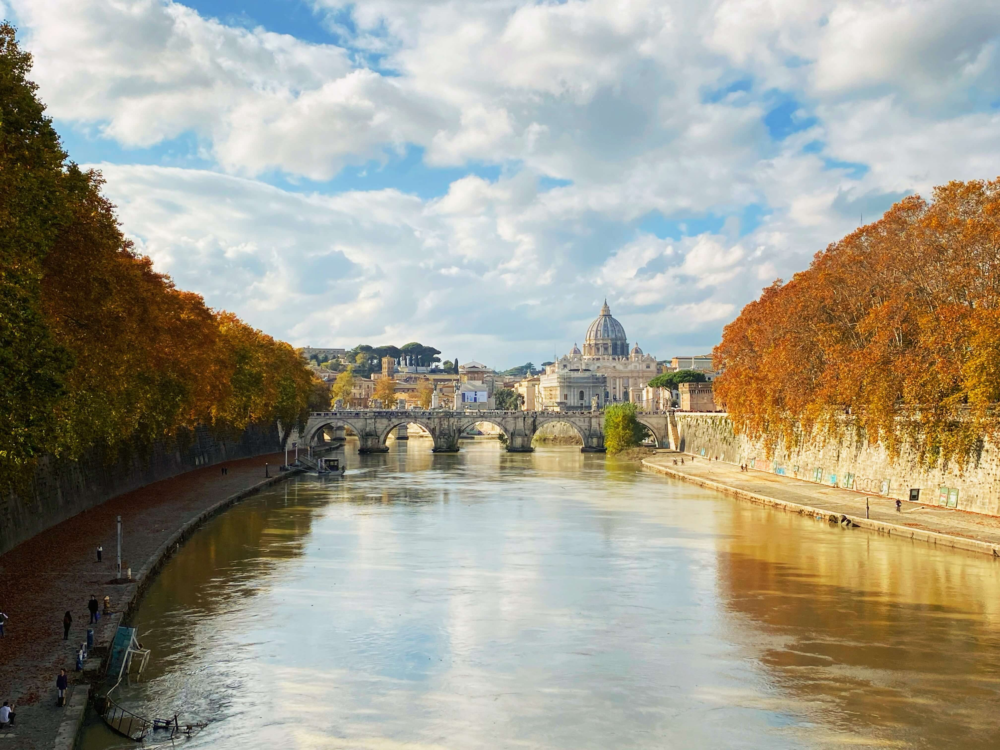

羅馬的誕生
羅穆盧斯和雷穆斯
據古羅馬歷史學家（Tito Livio）所著的《羅馬史》記載，原為國王之女的女祭司瑞亞·西爾維婭（Rhea Sivia）因偉反規定與戰神馬爾斯（Mars）生下雙胞胎兒子羅慕路斯（Romulus）與雷穆斯（Remus），激怒其當時篡位的叔父阿穆流斯（Amulius），並下令將這對雙胞胎丟入台伯河溺死，因僕人不忍心，便將雙胞胎放在竹籃於河中漂流，所幸雙胞胎命大，竹籃被勾在一棵無花果樹上，嬰兒嚎啕的哭聲也驚動附近的一隻母狼，母狼不但沒吃掉這對孿生兄弟還以自己的奶哺育，最後被牧羊人發現並帶回家養育。
長大之後的雙胞胎遇到見原當國王卻被逐放的外祖父努米托（Numitor），合力將篡位的叔公推翻以恢復外祖父之王位。而後兄弟兩人為了爭奪建造新城的權力，羅穆路斯親手殺死了弟弟，並以自己的名字將城市命名為——羅馬（Rome）——是「永恆之城」羅馬流傳至今的起源故事。
神話傳說裡的戰神馬爾斯被視為建立羅馬的羅穆路斯和雷穆斯之父，因此羅馬人也會自稱「馬爾斯之子」，而「母狼哺育雙胞胎兄弟」便成為羅馬城的象徵。
歷史古蹟
羅馬的文化和遺產
羅馬的文化和宏偉的歷史古跡、數百座教堂和壯觀的噴泉勾勒出羅馬令人難以置信的輪廓，使其成為 世界上歷史、考古和建築遺產最集中的城市， 擁有超過 16 % 的世界文化遺產和 70% 的義大利國內文化遺產。
她的歷史中心以奧勒良城牆為界，見證了近三個千年的興衰。1980年，城外是聖保羅大教堂，城內是羅馬教廷的治外法權的聖座建築，羅馬歷史中心區被聯合國教科文組織列入世界遺產名錄。
羅馬是天主教基督教的心臟，是世界上唯一一個擁有外國國家的城市，梵蒂岡城的飛地，因此，她通常被稱為「兩國首都」。
金色台伯河
孕育羅馬城的搖籃
台伯河（Fiume Tevere）是孕育羅馬的搖籃，流淌在羅馬人的血液中。古詩中常提及的台伯河神，不同於其他從希臘神話中延續的神明，他是最古老的當地神祇之一，是一位受羅馬人尊敬和愛戴的神。在如今羅馬市政府前便有一座台伯河神的雕像：一位身材健壯、留著鬍鬚的中年男子形象，左手持豐裕號角。
除了無數的神話故事，台伯河在古代也曾是重要的運輸要道，船隻從入海口可以順流而上，直至台伯島附近的台伯港。自羅馬時代以來，大型港口就沿著這條路發展起來，最終在19世紀下半葉隨著堤壩的建造而被拆除，也解救了城市長期以來受洪水侵襲之苦。
現今，當地居民與河流的直接聯繫已經消失，但是，愛和尊重仍然存在，人們意識到它在城市的誕生和發展中仍扮演重要的角色。更不用說能從許多歷史悠久的橋樑上（如 Ponte Sisto、 Ponte Sant'Angelo Fabricio） 欣賞到的令人難以置信的美景。
羅馬象徵
榮耀與輝煌
羅馬市政徽章於 1884 年正式採用，是一個酒紅色的盾牌，戴有有小花的金冠，盾牌上刻有一個希臘十字和字母大寫縮詞 S．P．Q．R ，代表拉丁語 Senatus PopulusQue Romanus 意即「元老院與羅馬人民」，也是羅馬共和國與羅馬帝國的正式名稱。此名或其縮寫形式被紋飾在羅馬軍團的鷹旗上以及古羅馬很多公共建築之上。時至今日，當今羅馬市的市徽、市政設施上，以及公用建築物上都可以找到「SPQR」這個縮寫詞。
然而，羅馬還有其他著名的象徵...
母狼 Capitoline： 一座青銅雕像，描繪了傳說中的母狼，她養育了兩對雙胞胎羅慕路斯與雷穆斯，保存在卡比托利歐博物館博物館。
古代皇家鷹 Aquila： 軍事肖像和城市的象徵，以及獅子，至高無上的動物形象，中世紀的象徵。
羅馬競技場 Colosseum： 羅馬世界最大的圓形劇場，2007年被公認為歐洲唯一的現代世界七大奇蹟。
特萊維噴泉 Fontana di Trevi： 世界上最具紀念意義和最著名的噴泉。
大圓頂 Cupolone： 梵蒂岡聖彼得大教堂的圓頂，是統治整個城市的基督教世界的象徵。
羅馬諺語
西方文明的源頭
有許多諺語和成語與或提到羅馬有關，以下列出較為著名的：
Quando a Roma vai, fai come vedrai. 當你去羅馬時，做如同你看到的事：到了一個地方，就要依循當地的風俗習慣。 — 入境隨俗。
Roma non è stata costruita in un giorno. 羅馬不是一天造成的：這句諺語用來說某事需要時間和耐心才能完成，或者無論如何，只要付出努力和一絲不苟，就會取得巨大的成果。
Tutte le strade portano a Roma. 條條大路通羅馬：諺語來自古羅馬高效的道路系統，目前義大利的大部分道路系統都以此為基礎。 許多道路從羅馬開始，如果朝相反的方向走，最後都會通向羅馬。
A Roma Dio non è trino, ma quattrino 在羅馬，上帝不是三位一體，而是金錢：這句諺語在玩文字遊戲，quattrino 音似「四位一體」是羅馬古幣的意思，在羅馬除了崇拜 trino「三位一體」，金錢之神更受崇拜。